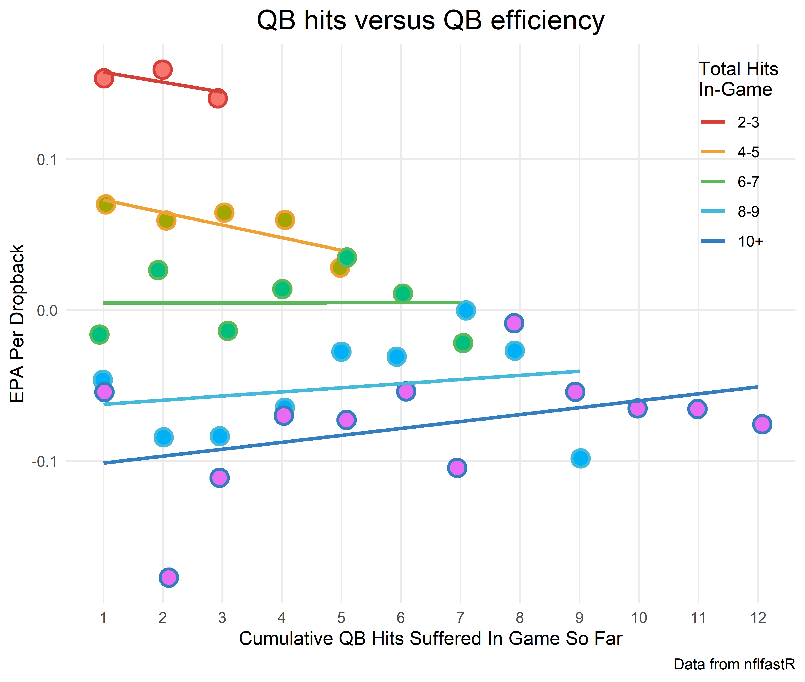

Table of Contents
In a follow-up to his excellent piece on the value of the run game in The Athletic (great website, highly recommended), Ted Nguyen shared the following:
“In-house NFL analytics crews track QB hits and the results of the accumulation of hits and how it affects offensive performance over the course of a game.”
Does the accumulation of hits affect offensive performance over the game? Is this finally a feather in the cap for the run game defenders?
Because QB hits are tracked by the NFL, we can investigate this ourselves. Let’s dive in.
Get the data
library(tidyverse)
pbp <- map_df(2015 : 2019, ~{
readRDS(
url(
glue::glue("https://raw.githubusercontent.com/guga31bb/nflfastR-data/master/data/play_by_play_{.}.rds")
)
) %>%
filter(pass == 1, !is.na(epa))
})As a starting point, I’m using the saved dataset of pass plays from nflfastR.
Let’s make sure the qb_hit variable includes penalty plays, because presumably a quarterback feels the effects of a hit even if the play didn’t count.
pbp %>%
filter(qb_hit==1, play_type == "no_play") %>%
select(desc, qb_hit)
# A tibble: 0 x 2
# ... with 2 variables: desc <chr>, qb_hit <dbl>Womp womp. Let’s see if we can just create hits by searching for the bracket [ since that’s what NFL uses to denote hits.
pbp %>%
filter(play_type != "no_play") %>%
mutate(
hit = if_else(stringr::str_detect(desc, "\\[") | sack == 1, 1, 0)
) %>%
group_by(hit, qb_hit) %>%
summarize(n = n())
# A tibble: 4 x 3
# Groups: hit [2]
hit qb_hit n
<dbl> <dbl> <int>
1 0 0 88971
2 0 1 3
3 1 0 373
4 1 1 14515Just counting sacks and hits works pretty well for the non-penalty plays; there’s high agreement between the official NFL stats (qb_hit) and the variable we created (hit). Let’s see which plays drive the difference:
pbp %>%
filter(play_type != "no_play") %>%
mutate(
hit = if_else(stringr::str_detect(desc, "\\[") | sack == 1, 1, 0)
) %>%
filter(hit == 0 & qb_hit == 1) %>%
select(desc)
# A tibble: 3 x 1
desc
<chr>
1 (6:33) (Shotgun) 5-J.Flacco to DEN 15 for -5 yards. FUMBLES, and re~
2 (8:37) (Shotgun) 11-C.Wentz Aborted. 62-J.Kelce FUMBLES at NYJ 28, ~
3 (:44) (Shotgun) 6-D.Hodges FUMBLES (Aborted) at NYJ 49, and recover~I guess these are data errors or something? I don’t know.
pbp %>%
filter(play_type != "no_play") %>%
mutate(
hit = if_else(stringr::str_detect(desc, "\\[") | sack == 1, 1, 0)
) %>%
filter(hit == 1 & qb_hit == 0) %>%
select(desc)
# A tibble: 373 x 1
desc
<chr>
1 (7:04) (Shotgun) 5-T.Taylor sacked ob at BUF 23 for -6 yards (50-R~
2 (4:41) (Shotgun) 12-T.Brady sacked at BUF 41 for -6 yards (55-J.Hu~
3 (14:21) 3-R.Wilson sacked ob at SEA 43 for -1 yards (56-J.Peppers).
4 (13:08) (Shotgun) 5-N.Foles sacked at STL 31 for -6 yards. FUMBLES~
5 (4:58) (Shotgun) 9-D.Brees sacked at NO 15 for -8 yards (56-J.Smit~
6 (1:37) (No Huddle, Shotgun) 8-M.Mariota sacked at CLE 43 for -8 ya~
7 (1:17) (No Huddle, Shotgun) 17-R.Tannehill sacked at MIA 39 for -7~
8 (14:21) (Shotgun) 12-A.Luck sacked at IND 18 for -5 yards (97-K.Kl~
9 (11:33) (Shotgun) 5-B.Bortles sacked at NE 31 for -6 yards (91-J.C~
10 (14:13) (Shotgun) 2-M.Vick sacked ob at PIT 27 for 0 yards (52-A.O~
# ... with 363 more rowsSeems like these are sacks out of bounds or fumbles without getting hit. Okay whatever, close enough. Let’s go with the official qb_hit on normal plays and the created version for no_play.
hits_data <- pbp %>%
mutate(
hit = case_when(
play_type != "no_play" & qb_hit == 1 ~ 1,
play_type == "no_play" & (stringr::str_detect(desc, "\\[") | sack == 1) ~ 1,
TRUE ~ 0
)
)Calculate total hits and cumulative hits
Now we need to create two variables: (1) qb hits taken up to the current point in the game and (2) total qb hits taken in the game. I’ll also filter out run plays.
hits_data <- hits_data %>%
group_by(posteam, game_id) %>%
mutate(
cum_hits=cumsum(qb_hit),
total_hits=sum(qb_hit)
) %>%
ungroup()I’m grouping by team (posteam), which isn’t quite perfect. If a team has to switch quarterbacks mid-game, then the count of hits won’t be accurate for the second quarterback. But because these situations are so rare, it shouldn’t matter in the aggregate.
The variable cum_hits is created using cumsum, which totals up how many QB hits a team has suffered to that point in the game. And total_hits just sums up the total number of hits over the whole game. I’m kind of amazed at how easy this is to do in R.
Now let’s see how total_hits affects EPA per dropback at the game level:
hits_data %>%
group_by(total_hits) %>%
summarize(
mean_epa = mean(epa),
games=n_distinct(game_id, posteam)
)
# A tibble: 17 x 3
total_hits mean_epa games
<dbl> <dbl> <int>
1 0 0.256 35
2 1 0.232 119
3 2 0.195 238
4 3 0.167 307
5 4 0.123 374
6 5 0.0557 407
7 6 0.0339 331
8 7 0.0171 285
9 8 -0.0162 200
10 9 -0.0511 146
11 10 -0.0343 90
12 11 -0.112 59
13 12 -0.0274 36
14 13 -0.0337 24
15 14 0.0182 7
16 15 -0.249 7
17 16 -0.245 5Wow, the most efficient games are most decidedly the ones in which a QB isn’t hit often!
Make sure the data are sound
I was surprised that there have been so many games where a QB was never hit (35, the first row above). Initially I thought I did something wrong, but it checks out. Let’s make sure we can replicate the official NFL data. I’m going to look at the later stage of Cleveland’s 2018 season because I know that’s where some of the 0-hit games come from.
hits_data %>%
filter(posteam == "CLE" & season == 2018 & week >= 10) %>%
group_by(week) %>%
summarize(hits = mean(total_hits), mean_epa = mean(epa))
# A tibble: 7 x 3
week hits mean_epa
<int> <dbl> <dbl>
1 10 0 0.614
2 12 1 0.837
3 13 1 -0.145
4 14 1 -0.112
5 15 3 -0.0154
6 16 0 0.458
7 17 2 0.211 Now compare to the official stats (with thanks to SportRadar):
Boom! A perfect match!
Some final cleaning up
Returning to the relationship between hits and EPA per dropback, case closed, right? Games with fewer hits have higher EPA per dropback. Well, not so fast. This is picking up, in part, a game script effect, where overmatched teams fall behind early and are forced to pass a lot, resulting in their QB being hit more often.
So we want to create a level playing field. To do this, let’s take teams with a given number of hits and see how the number of accumulated hits affects passing efficiency, holding the total number of hits received in the game constant. There are a number of other ways we could have approached this – looking at plays within some range of win probability or score differential, for example – but I think this is a nice illustration.
hits_data <- hits_data %>%
mutate(
hit_in_game=
case_when(total_hits==0 | total_hits==1~"0-1",
total_hits==2 | total_hits==3~"2-3",
total_hits==4 | total_hits==5~"4-5",
total_hits==6 | total_hits==7~"6-7",
total_hits==8|total_hits==9~"8-9",
total_hits>9~"10+") %>%
factor(levels = c("0", "2-3", "4-5", "6-7", "8-9", "10+"))
)Above, we’ve created some BINS based on how often a quarterback is hit in a game (the factor(levels… part at the end isn’t strictly necessary, but allows the legend to display in the right order later on).
Now we can group by our bins, along with how many hits a QB has taken up to that point in a given game.
chart <- hits_data %>%
group_by(hit_in_game,cum_hits) %>%
summarize(avg_epa = mean(epa), plays = n())Make the graph
Now all that’s left to do is plot the data (with a huge thanks to R genius Josh Hornsby for helping make this look better)
chart %>%
filter(cum_hits > 0 & cum_hits <=12 & !is.na(hit_in_game)) %>%
ggplot(aes(x = cum_hits, y = avg_epa, color = hit_in_game, shape = hit_in_game)) +
geom_jitter(aes(x = cum_hits, y = avg_epa, fill = hit_in_game), shape = 21, stroke = 1.25, size = 4, width = 0.1, show.legend=FALSE)+
geom_smooth(method = lm, se = FALSE) +
theme_minimal() +
theme(
legend.position = c(0.99, 0.99),
legend.justification = c(1, 1) ,
plot.title = element_text(size = 16, hjust = 0.5),
panel.grid.minor = element_blank())+
ggsci::scale_color_locuszoom(name = "Total Hits\nIn-Game") +
scale_y_continuous(name = "EPA Per Dropback", breaks = scales::pretty_breaks(n = 5))+
scale_x_continuous(breaks = 0:50, name = "Cumulative QB Hits Suffered In Game So Far")+
labs(title="QB hits versus QB efficiency", caption = "Data from nflfastR")
Well then. The negative relationship between QB hits and efficiency is because the group of teams that get hit often are the only ones to make it to the high numbers of hits. Stated this way, it sounds obvious, but it’s important. These teams aren’t necessarily inefficient because their QBs are getting hit a lot; but rather, their QBs are getting hit a lot because they’re bad teams to begin with.
Side note: I’m not showing 0 hits because there’s a mechanical relationship between QB hits and efficiency. It is the one x-axis point that contains 0 hits, by definition, so of course EPA per play is higher: it’s a comparison of a set of plays with no QB hits to other sets of plays with QB hits. I also truncated the x-axis at 12 hits because anything higher is extremely rare.
Wrapping up
Letting your QB get hit is bad. Obviously. Teams that allow more hits are less likely to have efficient offenses. But for a given level of hits, there is no evidence that the accumulation of hits makes any difference throughout the course of a game. The evidence suggests that we’ve found a variation of Brian Burke’s “passing paradox”:
As with the Rule of 53, the NFL has appeared to draw the wrong conclusions from a correlation driven by game state.